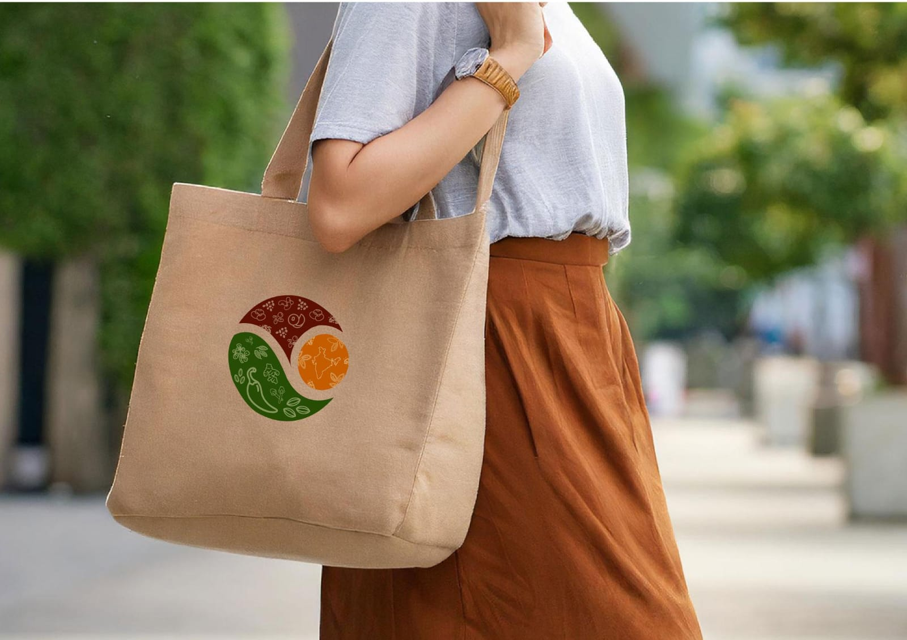
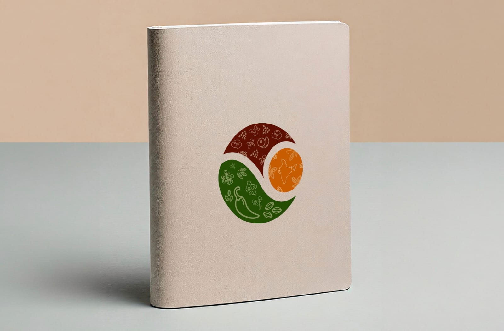
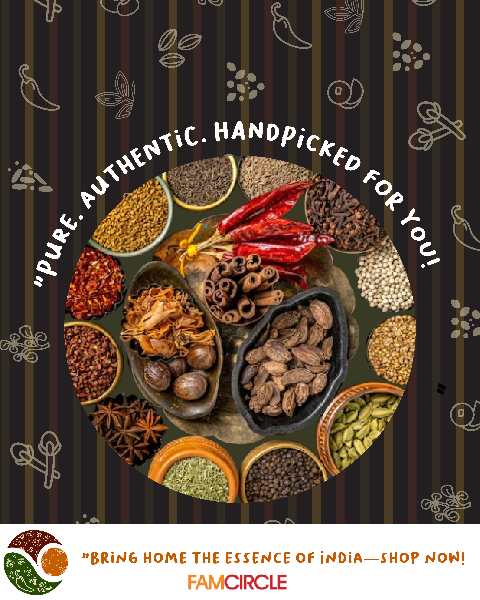

Fam-Circle Branding
A vibrant brand identity designed to connect communities and foster relationships. The logo and visual style embody warmth, inclusivity, and an engaging user experience.
Service
Logo & Identity
Project
Fam-Circle
Tools
Illustrator, Photoshop


